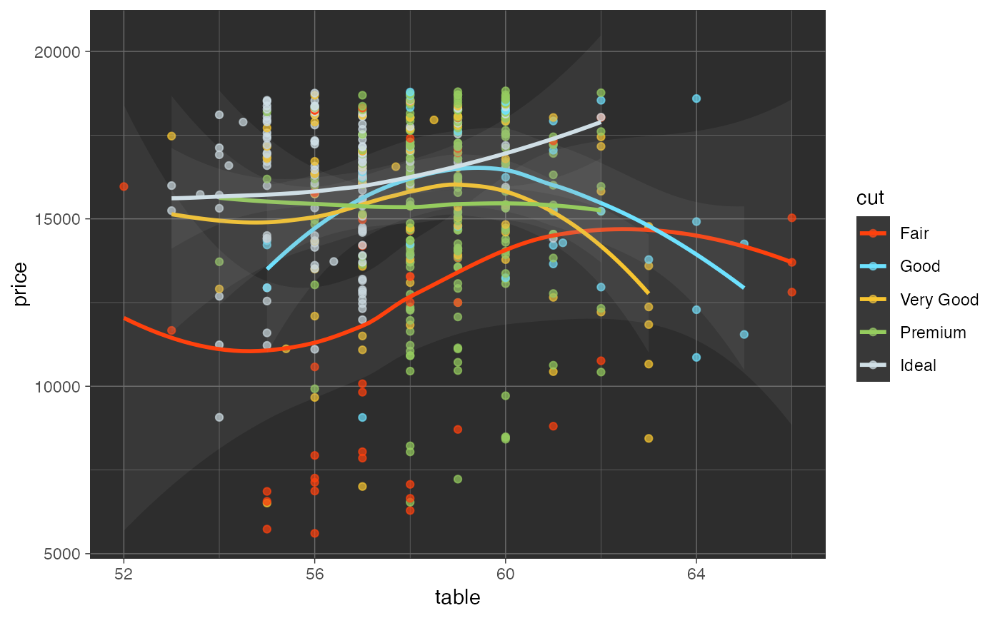
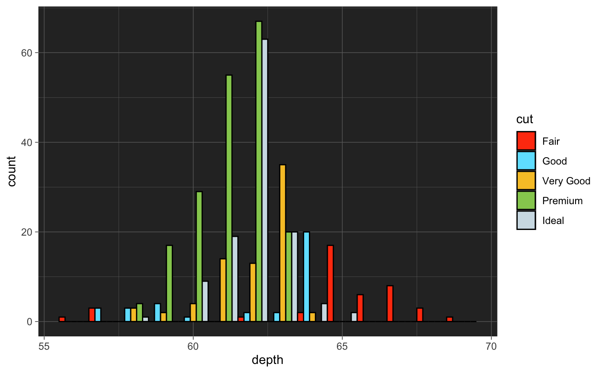

See pal_tron for details.
scale_color_tron(palette = c("legacy"), alpha = 1, ...) scale_colour_tron(palette = c("legacy"), alpha = 1, ...) scale_fill_tron(palette = c("legacy"), alpha = 1, ...)
| palette | Palette type.
Currently there is one available option: |
|---|---|
| alpha | Transparency level, a real number in (0, 1].
See |
| ... | additional parameters for |
library("ggplot2") data("diamonds") ggplot( subset(diamonds, carat >= 2.2), aes(x = table, y = price, colour = cut) ) + geom_point(alpha = 0.7) + geom_smooth(method = "loess", alpha = 0.1, size = 1, span = 1) + theme_dark() + theme( panel.background = element_rect(fill = "#2D2D2D"), legend.key = element_rect(fill = "#2D2D2D") ) + scale_color_tron()#>ggplot( subset(diamonds, carat > 2.2 & depth > 55 & depth < 70), aes(x = depth, fill = cut) ) + geom_histogram(colour = "black", binwidth = 1, position = "dodge") + theme_dark() + theme( panel.background = element_rect(fill = "#2D2D2D") ) + scale_fill_tron()